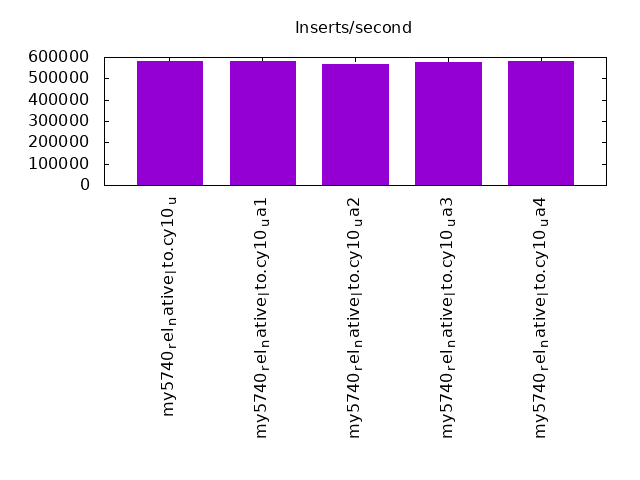
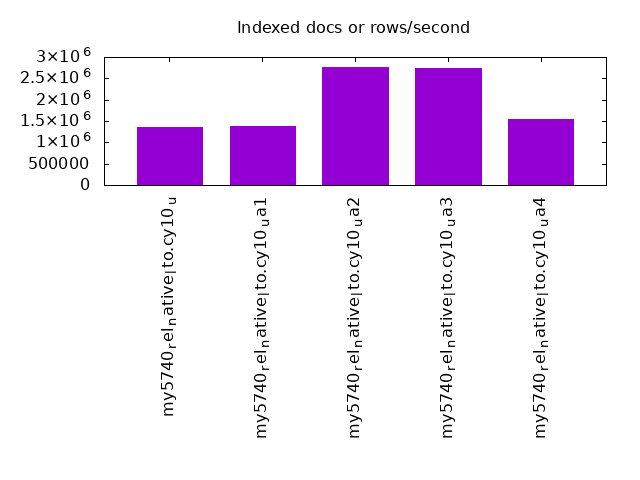
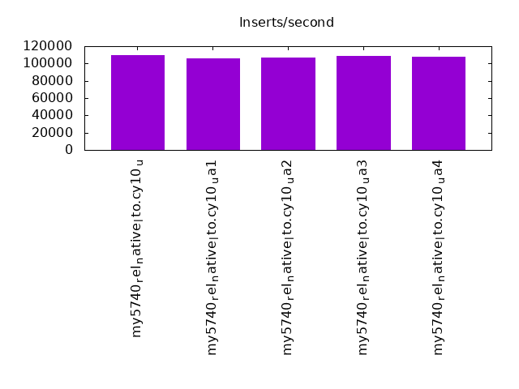
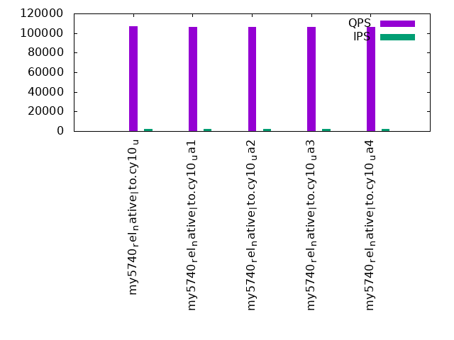
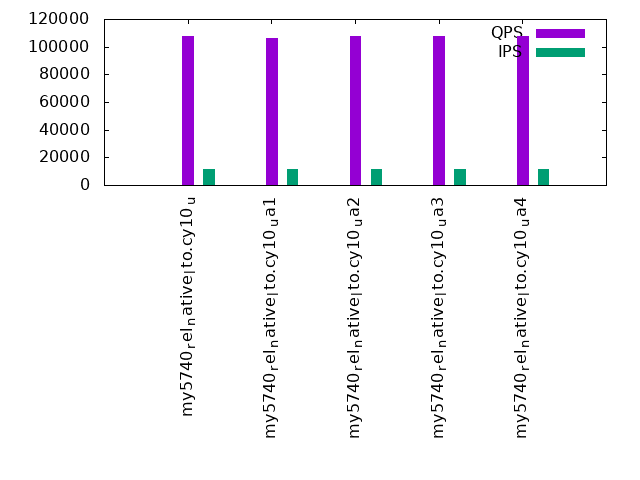
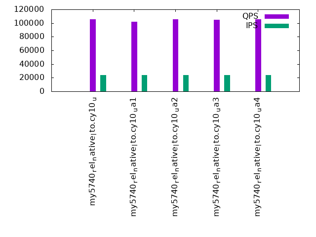

This is a report for the insert benchmark with 480M docs and 24 client(s). It is generated by scripts (bash, awk, sed) and Tufte might not be impressed. An overview of the insert benchmark is here and a short update is here. Below, by DBMS, I mean DBMS+version.config. An example is my8020.c10b40 where my means MySQL, 8020 is version 8.0.20 and c10b40 is the name for the configuration file.
The test server has 80 cores with hyperthreads enabled, 256G RAM and fast storage. The benchmark was run with 24 clients and there were 1 or 3 connections per client (1 for queries or inserts without rate limits, 1+1 for rate limited inserts+deletes). There are 24 tables, with a client per table. It loads 480M rows without secondary indexes, creates secondary indexes, then inserts 960M rows with a delete per insert to avoid growing the table. It then does 3 read+write tests for 3600s each that do queries as fast as possible with 100, 500 and then 1000 inserts/second/client concurrent with the queries and 1000 deletes/second to avoid growing the table. The database is cached by InnoDB.
The tested DBMS are:
The numbers are inserts/s for l.i0 and l.i1, indexed docs (or rows) /s for l.x and queries/s for q*.2. The values are the average rate over the entire test for inserts (IPS) and queries (QPS). The range of values for IPS and QPS is split into 3 parts: bottom 25%, middle 50%, top 25%. Values in the bottom 25% have a red background, values in the top 25% have a green background and values in the middle have no color. A gray background is used for values that can be ignored because the DBMS did not sustain the target insert rate. Red backgrounds are not used when the minimum value is within 80% of the max value.
| dbms | l.i0 | l.x | l.i1 | q100.1 | q500.1 | q1000.1 |
|---|---|---|---|---|---|---|
| my5740_rel_native_lto.cy10_u | 579710 | 1352394 | 109626 | 106796 | 107989 | 105594 |
| my5740_rel_native_lto.cy10_ua1 | 579710 | 1387572 | 105960 | 106196 | 105956 | 101978 |
| my5740_rel_native_lto.cy10_ua2 | 569395 | 2775144 | 107191 | 106622 | 108008 | 105458 |
| my5740_rel_native_lto.cy10_ua3 | 576923 | 2743428 | 108806 | 106096 | 107502 | 104621 |
| my5740_rel_native_lto.cy10_ua4 | 579710 | 1548710 | 107635 | 106402 | 107835 | 105713 |
This table has relative throughput, throughput for the DBMS relative to the DBMS in the first line, using the absolute throughput from the previous table. Values less than 0.95 have a yellow background. Values greater than 1.05 have a blue background.
| dbms | l.i0 | l.x | l.i1 | q100.1 | q500.1 | q1000.1 |
|---|---|---|---|---|---|---|
| my5740_rel_native_lto.cy10_u | 1.00 | 1.00 | 1.00 | 1.00 | 1.00 | 1.00 |
| my5740_rel_native_lto.cy10_ua1 | 1.00 | 1.03 | 0.97 | 0.99 | 0.98 | 0.97 |
| my5740_rel_native_lto.cy10_ua2 | 0.98 | 2.05 | 0.98 | 1.00 | 1.00 | 1.00 |
| my5740_rel_native_lto.cy10_ua3 | 1.00 | 2.03 | 0.99 | 0.99 | 1.00 | 0.99 |
| my5740_rel_native_lto.cy10_ua4 | 1.00 | 1.15 | 0.98 | 1.00 | 1.00 | 1.00 |
This lists the average rate of inserts/s for the tests that do inserts concurrent with queries. For such tests the query rate is listed in the table above. The read+write tests are setup so that the insert rate should match the target rate every second. Cells that are not at least 95% of the target have a red background to indicate a failure to satisfy the target.
| dbms | q100.1 | q500.1 | q1000.1 |
|---|---|---|---|
| my5740_rel_native_lto.cy10_u | 2379 | 11904 | 23828 |
| my5740_rel_native_lto.cy10_ua1 | 2372 | 11904 | 23815 |
| my5740_rel_native_lto.cy10_ua2 | 2378 | 11904 | 23828 |
| my5740_rel_native_lto.cy10_ua3 | 2379 | 11904 | 23821 |
| my5740_rel_native_lto.cy10_ua4 | 2379 | 11904 | 23828 |
| target | 2400 | 12000 | 24000 |
l.i0: load without secondary indexes. Graphs for performance per 1-second interval are here.
Average throughput:
Insert response time histogram: each cell has the percentage of responses that take <= the time in the header and max is the max response time in seconds. For the max column values in the top 25% of the range have a red background and in the bottom 25% of the range have a green background. The red background is not used when the min value is within 80% of the max value.
| dbms | 256us | 1ms | 4ms | 16ms | 64ms | 256ms | 1s | 4s | 16s | gt | max |
|---|---|---|---|---|---|---|---|---|---|---|---|
| my5740_rel_native_lto.cy10_u | 0.216 | 57.866 | 41.872 | 0.003 | 0.043 | 0.166 | |||||
| my5740_rel_native_lto.cy10_ua1 | 0.084 | 57.313 | 42.555 | 0.004 | 0.043 | 0.097 | |||||
| my5740_rel_native_lto.cy10_ua2 | 0.197 | 49.400 | 50.357 | 0.003 | 0.043 | 0.116 | |||||
| my5740_rel_native_lto.cy10_ua3 | 0.175 | 55.546 | 44.233 | 0.003 | 0.043 | 0.099 | |||||
| my5740_rel_native_lto.cy10_ua4 | 0.188 | 57.888 | 41.878 | 0.003 | 0.043 | 0.103 |
Performance metrics for the DBMS listed above. Some are normalized by throughput, others are not. Legend for results is here.
ips qps rps rmbps wps wmbps rpq rkbpq wpi wkbpi csps cpups cspq cpupq dbgb1 dbgb2 rss maxop p50 p99 tag 579710 0 0 0.0 2893.0 137.5 0.000 0.000 0.005 0.243 91633 40.5 0.158 56 31.8 160.3 47.5 0.166 24775 21881 480m.my5740_rel_native_lto.cy10_u 579710 0 0 0.0 2895.0 137.2 0.000 0.000 0.005 0.242 99366 40.6 0.171 56 31.8 160.3 47.5 0.097 24675 22278 480m.my5740_rel_native_lto.cy10_ua1 569395 0 0 0.0 3148.9 143.3 0.000 0.000 0.006 0.258 89359 40.1 0.157 56 31.8 160.3 47.5 0.116 24273 21678 480m.my5740_rel_native_lto.cy10_ua2 576923 0 0 0.0 3169.4 145.2 0.000 0.000 0.005 0.258 88637 40.2 0.154 56 31.8 160.3 47.5 0.099 24575 21980 480m.my5740_rel_native_lto.cy10_ua3 579710 0 0 0.0 1687.5 120.8 0.000 0.000 0.003 0.213 92438 40.4 0.159 56 31.8 160.3 47.5 0.103 24678 21978 480m.my5740_rel_native_lto.cy10_ua4
l.x: create secondary indexes.
Average throughput:
Performance metrics for the DBMS listed above. Some are normalized by throughput, others are not. Legend for results is here.
ips qps rps rmbps wps wmbps rpq rkbpq wpi wkbpi csps cpups cspq cpupq dbgb1 dbgb2 rss maxop p50 p99 tag 1352394 0 0 0.0 21715.0 1151.5 0.000 0.000 0.016 0.872 110742 30.9 0.082 18 70.8 199.3 81.6 0.002 NA NA 480m.my5740_rel_native_lto.cy10_u 1387572 0 0 0.0 22291.0 1185.8 0.000 0.000 0.016 0.875 293499 31.2 0.212 18 70.8 199.3 81.6 0.003 NA NA 480m.my5740_rel_native_lto.cy10_ua1 2775144 0 0 0.0 37559.2 2290.1 0.000 0.000 0.014 0.845 133024 27.6 0.048 8 70.8 199.3 81.6 0.002 NA NA 480m.my5740_rel_native_lto.cy10_ua2 2743428 0 1 0.1 37199.4 2289.9 0.000 0.000 0.014 0.855 125902 29.4 0.046 9 70.8 199.3 81.6 0.002 NA NA 480m.my5740_rel_native_lto.cy10_ua3 1548710 0 0 0.0 17539.8 1260.1 0.000 0.000 0.011 0.833 124594 31.0 0.080 16 70.8 199.3 81.6 0.002 NA NA 480m.my5740_rel_native_lto.cy10_ua4
l.i1: continue load after secondary indexes created. Graphs for performance per 1-second interval are here.
Average throughput:
Insert response time histogram: each cell has the percentage of responses that take <= the time in the header and max is the max response time in seconds. For the max column values in the top 25% of the range have a red background and in the bottom 25% of the range have a green background. The red background is not used when the min value is within 80% of the max value.
| dbms | 256us | 1ms | 4ms | 16ms | 64ms | 256ms | 1s | 4s | 16s | gt | max |
|---|---|---|---|---|---|---|---|---|---|---|---|
| my5740_rel_native_lto.cy10_u | 0.012 | 99.772 | 0.193 | 0.023 | nonzero | 0.663 | |||||
| my5740_rel_native_lto.cy10_ua1 | 0.021 | 99.509 | 0.300 | 0.170 | nonzero | 0.262 | |||||
| my5740_rel_native_lto.cy10_ua2 | 0.027 | 99.573 | 0.373 | 0.027 | nonzero | 0.266 | |||||
| my5740_rel_native_lto.cy10_ua3 | 0.013 | 99.604 | 0.349 | 0.033 | 0.131 | ||||||
| my5740_rel_native_lto.cy10_ua4 | 0.057 | 99.524 | 0.395 | 0.024 | 0.128 |
Delete response time histogram: each cell has the percentage of responses that take <= the time in the header and max is the max response time in seconds. For the max column values in the top 25% of the range have a red background and in the bottom 25% of the range have a green background. The red background is not used when the min value is within 80% of the max value.
| dbms | 256us | 1ms | 4ms | 16ms | 64ms | 256ms | 1s | 4s | 16s | gt | max |
|---|---|---|---|---|---|---|---|---|---|---|---|
| my5740_rel_native_lto.cy10_u | 0.034 | 99.843 | 0.100 | 0.022 | nonzero | 0.660 | |||||
| my5740_rel_native_lto.cy10_ua1 | 0.330 | 99.562 | 0.082 | 0.026 | 0.166 | ||||||
| my5740_rel_native_lto.cy10_ua2 | 0.052 | 99.701 | 0.220 | 0.027 | nonzero | 0.266 | |||||
| my5740_rel_native_lto.cy10_ua3 | 0.034 | 99.732 | 0.201 | 0.032 | 0.130 | ||||||
| my5740_rel_native_lto.cy10_ua4 | 0.046 | 99.745 | 0.175 | 0.034 | 0.126 |
Performance metrics for the DBMS listed above. Some are normalized by throughput, others are not. Legend for results is here.
ips qps rps rmbps wps wmbps rpq rkbpq wpi wkbpi csps cpups cspq cpupq dbgb1 dbgb2 rss maxop p50 p99 tag 109626 0 119 1.9 10923.2 342.8 0.001 0.017 0.100 3.202 114400 70.1 1.044 512 220.9 400.1 216.8 0.663 4595 4196 480m.my5740_rel_native_lto.cy10_u 105960 0 137 2.1 10682.9 335.0 0.001 0.021 0.101 3.237 312604 69.3 2.950 523 224.0 405.8 216.8 0.262 4496 599 480m.my5740_rel_native_lto.cy10_ua1 107191 0 114 1.8 13651.8 417.6 0.001 0.017 0.127 3.990 121036 70.1 1.129 523 220.7 399.7 216.8 0.266 4446 4046 480m.my5740_rel_native_lto.cy10_ua2 108806 0 120 1.9 13782.8 421.8 0.001 0.018 0.127 3.969 120881 70.0 1.111 515 221.0 400.3 216.8 0.131 4545 4096 480m.my5740_rel_native_lto.cy10_ua3 107635 0 24 1.4 10407.0 300.3 0.000 0.013 0.097 2.857 128043 69.5 1.190 517 220.9 400.1 216.8 0.128 4496 4113 480m.my5740_rel_native_lto.cy10_ua4
q100.1: range queries with 100 insert/s per client. Graphs for performance per 1-second interval are here.
Average throughput:
Query response time histogram: each cell has the percentage of responses that take <= the time in the header and max is the max response time in seconds. For max values in the top 25% of the range have a red background and in the bottom 25% of the range have a green background. The red background is not used when the min value is within 80% of the max value.
| dbms | 256us | 1ms | 4ms | 16ms | 64ms | 256ms | 1s | 4s | 16s | gt | max |
|---|---|---|---|---|---|---|---|---|---|---|---|
| my5740_rel_native_lto.cy10_u | 84.942 | 15.055 | 0.003 | nonzero | nonzero | 0.023 | |||||
| my5740_rel_native_lto.cy10_ua1 | 84.025 | 15.972 | 0.002 | nonzero | 0.014 | ||||||
| my5740_rel_native_lto.cy10_ua2 | 84.724 | 15.273 | 0.003 | nonzero | nonzero | 0.025 | |||||
| my5740_rel_native_lto.cy10_ua3 | 84.243 | 15.754 | 0.003 | nonzero | nonzero | 0.032 | |||||
| my5740_rel_native_lto.cy10_ua4 | 84.578 | 15.392 | 0.030 | nonzero | nonzero | 0.050 |
Insert response time histogram: each cell has the percentage of responses that take <= the time in the header and max is the max response time in seconds. For max values in the top 25% of the range have a red background and in the bottom 25% of the range have a green background. The red background is not used when the min value is within 80% of the max value.
| dbms | 256us | 1ms | 4ms | 16ms | 64ms | 256ms | 1s | 4s | 16s | gt | max |
|---|---|---|---|---|---|---|---|---|---|---|---|
| my5740_rel_native_lto.cy10_u | 31.056 | 68.943 | 0.001 | 0.022 | |||||||
| my5740_rel_native_lto.cy10_ua1 | 39.173 | 60.826 | 0.001 | 0.016 | |||||||
| my5740_rel_native_lto.cy10_ua2 | 32.083 | 67.914 | 0.002 | 0.037 | |||||||
| my5740_rel_native_lto.cy10_ua3 | 29.350 | 70.648 | 0.002 | 0.041 | |||||||
| my5740_rel_native_lto.cy10_ua4 | 27.935 | 72.059 | 0.006 | 0.052 |
Delete response time histogram: each cell has the percentage of responses that take <= the time in the header and max is the max response time in seconds. For max values in the top 25% of the range have a red background and in the bottom 25% of the range have a green background. The red background is not used when the min value is within 80% of the max value.
| dbms | 256us | 1ms | 4ms | 16ms | 64ms | 256ms | 1s | 4s | 16s | gt | max |
|---|---|---|---|---|---|---|---|---|---|---|---|
| my5740_rel_native_lto.cy10_u | 78.004 | 21.996 | 0.015 | ||||||||
| my5740_rel_native_lto.cy10_ua1 | 91.534 | 8.466 | 0.011 | ||||||||
| my5740_rel_native_lto.cy10_ua2 | 79.220 | 20.779 | 0.001 | 0.037 | |||||||
| my5740_rel_native_lto.cy10_ua3 | 80.806 | 19.192 | 0.002 | 0.058 | |||||||
| my5740_rel_native_lto.cy10_ua4 | 80.845 | 19.152 | 0.002 | 0.052 |
Performance metrics for the DBMS listed above. Some are normalized by throughput, others are not. Legend for results is here.
ips qps rps rmbps wps wmbps rpq rkbpq wpi wkbpi csps cpups cspq cpupq dbgb1 dbgb2 rss maxop p50 p99 tag 2379 106796 967 15.1 7160.1 205.5 0.009 0.145 3.010 88.476 453290 41.7 4.244 312 220.9 400.1 216.9 0.023 4476 4188 480m.my5740_rel_native_lto.cy10_u 2372 106196 852 13.3 5386.8 153.5 0.008 0.128 2.271 66.242 861007 41.1 8.108 310 224.0 405.8 216.9 0.014 4460 4140 480m.my5740_rel_native_lto.cy10_ua1 2378 106622 966 15.1 8858.2 252.7 0.009 0.145 3.725 108.796 456625 41.7 4.283 313 220.7 399.7 216.9 0.025 4491 4220 480m.my5740_rel_native_lto.cy10_ua2 2379 106096 957 15.0 8853.0 252.5 0.009 0.144 3.722 108.690 454134 41.6 4.280 314 221.0 400.3 216.9 0.032 4460 4171 480m.my5740_rel_native_lto.cy10_ua3 2379 106402 161 9.5 7124.9 197.6 0.002 0.091 2.995 85.051 460415 41.9 4.327 315 220.9 400.1 216.9 0.050 4460 4156 480m.my5740_rel_native_lto.cy10_ua4
q500.1: range queries with 500 insert/s per client. Graphs for performance per 1-second interval are here.
Average throughput:
Query response time histogram: each cell has the percentage of responses that take <= the time in the header and max is the max response time in seconds. For max values in the top 25% of the range have a red background and in the bottom 25% of the range have a green background. The red background is not used when the min value is within 80% of the max value.
| dbms | 256us | 1ms | 4ms | 16ms | 64ms | 256ms | 1s | 4s | 16s | gt | max |
|---|---|---|---|---|---|---|---|---|---|---|---|
| my5740_rel_native_lto.cy10_u | 86.685 | 13.306 | 0.008 | nonzero | nonzero | nonzero | 0.095 | ||||
| my5740_rel_native_lto.cy10_ua1 | 83.809 | 16.185 | 0.006 | nonzero | nonzero | 0.016 | |||||
| my5740_rel_native_lto.cy10_ua2 | 86.688 | 13.303 | 0.008 | nonzero | nonzero | 0.020 | |||||
| my5740_rel_native_lto.cy10_ua3 | 86.276 | 13.716 | 0.008 | nonzero | nonzero | 0.035 | |||||
| my5740_rel_native_lto.cy10_ua4 | 86.562 | 13.422 | 0.016 | 0.001 | nonzero | 0.054 |
Insert response time histogram: each cell has the percentage of responses that take <= the time in the header and max is the max response time in seconds. For max values in the top 25% of the range have a red background and in the bottom 25% of the range have a green background. The red background is not used when the min value is within 80% of the max value.
| dbms | 256us | 1ms | 4ms | 16ms | 64ms | 256ms | 1s | 4s | 16s | gt | max |
|---|---|---|---|---|---|---|---|---|---|---|---|
| my5740_rel_native_lto.cy10_u | 6.337 | 93.658 | 0.005 | nonzero | 0.093 | ||||||
| my5740_rel_native_lto.cy10_ua1 | 22.444 | 77.552 | 0.005 | 0.027 | |||||||
| my5740_rel_native_lto.cy10_ua2 | 9.605 | 90.390 | 0.005 | 0.025 | |||||||
| my5740_rel_native_lto.cy10_ua3 | 12.125 | 87.874 | 0.001 | 0.039 | |||||||
| my5740_rel_native_lto.cy10_ua4 | 21.165 | 78.826 | 0.009 | 0.040 |
Delete response time histogram: each cell has the percentage of responses that take <= the time in the header and max is the max response time in seconds. For max values in the top 25% of the range have a red background and in the bottom 25% of the range have a green background. The red background is not used when the min value is within 80% of the max value.
| dbms | 256us | 1ms | 4ms | 16ms | 64ms | 256ms | 1s | 4s | 16s | gt | max |
|---|---|---|---|---|---|---|---|---|---|---|---|
| my5740_rel_native_lto.cy10_u | 14.686 | 85.310 | 0.004 | 0.045 | |||||||
| my5740_rel_native_lto.cy10_ua1 | 82.521 | 17.477 | 0.002 | 0.019 | |||||||
| my5740_rel_native_lto.cy10_ua2 | 19.606 | 80.390 | 0.003 | 0.022 | |||||||
| my5740_rel_native_lto.cy10_ua3 | 28.462 | 71.537 | 0.001 | nonzero | 0.082 | ||||||
| my5740_rel_native_lto.cy10_ua4 | 35.909 | 64.088 | 0.002 | 0.033 |
Performance metrics for the DBMS listed above. Some are normalized by throughput, others are not. Legend for results is here.
ips qps rps rmbps wps wmbps rpq rkbpq wpi wkbpi csps cpups cspq cpupq dbgb1 dbgb2 rss maxop p50 p99 tag 11904 107989 489 7.6 5682.5 164.5 0.005 0.072 0.477 14.148 456755 43.7 4.230 324 220.9 400.1 216.9 0.095 4523 4220 480m.my5740_rel_native_lto.cy10_u 11904 105956 299 4.7 6208.6 179.1 0.003 0.045 0.522 15.408 929241 43.0 8.770 325 224.0 405.8 216.9 0.016 4444 4108 480m.my5740_rel_native_lto.cy10_ua1 11904 108008 493 7.7 6851.8 196.9 0.005 0.073 0.576 16.936 459408 43.7 4.253 324 220.7 399.7 216.9 0.020 4539 4220 480m.my5740_rel_native_lto.cy10_ua2 11904 107502 483 7.5 6905.0 198.4 0.004 0.072 0.580 17.066 457327 43.5 4.254 324 221.0 400.3 216.9 0.035 4509 4220 480m.my5740_rel_native_lto.cy10_ua3 11904 107835 136 6.5 5662.4 160.2 0.001 0.062 0.476 13.777 462694 44.0 4.291 326 220.9 400.1 216.9 0.054 4540 4236 480m.my5740_rel_native_lto.cy10_ua4
q1000.1: range queries with 1000 insert/s per client. Graphs for performance per 1-second interval are here.
Average throughput:
Query response time histogram: each cell has the percentage of responses that take <= the time in the header and max is the max response time in seconds. For max values in the top 25% of the range have a red background and in the bottom 25% of the range have a green background. The red background is not used when the min value is within 80% of the max value.
| dbms | 256us | 1ms | 4ms | 16ms | 64ms | 256ms | 1s | 4s | 16s | gt | max |
|---|---|---|---|---|---|---|---|---|---|---|---|
| my5740_rel_native_lto.cy10_u | 82.592 | 17.313 | 0.073 | 0.021 | nonzero | 0.036 | |||||
| my5740_rel_native_lto.cy10_ua1 | 78.515 | 21.421 | 0.054 | 0.010 | nonzero | 0.027 | |||||
| my5740_rel_native_lto.cy10_ua2 | 82.447 | 17.463 | 0.070 | 0.021 | nonzero | 0.031 | |||||
| my5740_rel_native_lto.cy10_ua3 | 81.940 | 17.966 | 0.072 | 0.021 | nonzero | nonzero | 0.065 | ||||
| my5740_rel_native_lto.cy10_ua4 | 82.837 | 17.065 | 0.076 | 0.022 | nonzero | 0.052 |
Insert response time histogram: each cell has the percentage of responses that take <= the time in the header and max is the max response time in seconds. For max values in the top 25% of the range have a red background and in the bottom 25% of the range have a green background. The red background is not used when the min value is within 80% of the max value.
| dbms | 256us | 1ms | 4ms | 16ms | 64ms | 256ms | 1s | 4s | 16s | gt | max |
|---|---|---|---|---|---|---|---|---|---|---|---|
| my5740_rel_native_lto.cy10_u | 2.776 | 93.934 | 3.290 | 0.058 | |||||||
| my5740_rel_native_lto.cy10_ua1 | 12.481 | 87.004 | 0.515 | 0.050 | |||||||
| my5740_rel_native_lto.cy10_ua2 | 2.172 | 94.511 | 3.317 | 0.054 | |||||||
| my5740_rel_native_lto.cy10_ua3 | 2.087 | 94.527 | 3.386 | 0.055 | |||||||
| my5740_rel_native_lto.cy10_ua4 | 2.231 | 93.925 | 3.844 | 0.057 |
Delete response time histogram: each cell has the percentage of responses that take <= the time in the header and max is the max response time in seconds. For max values in the top 25% of the range have a red background and in the bottom 25% of the range have a green background. The red background is not used when the min value is within 80% of the max value.
| dbms | 256us | 1ms | 4ms | 16ms | 64ms | 256ms | 1s | 4s | 16s | gt | max |
|---|---|---|---|---|---|---|---|---|---|---|---|
| my5740_rel_native_lto.cy10_u | 2.837 | 94.731 | 2.432 | 0.048 | |||||||
| my5740_rel_native_lto.cy10_ua1 | 14.530 | 85.121 | 0.348 | 0.050 | |||||||
| my5740_rel_native_lto.cy10_ua2 | 2.120 | 95.419 | 2.460 | 0.049 | |||||||
| my5740_rel_native_lto.cy10_ua3 | 2.083 | 95.369 | 2.548 | 0.057 | |||||||
| my5740_rel_native_lto.cy10_ua4 | 1.951 | 95.964 | 2.085 | 0.052 |
Performance metrics for the DBMS listed above. Some are normalized by throughput, others are not. Legend for results is here.
ips qps rps rmbps wps wmbps rpq rkbpq wpi wkbpi csps cpups cspq cpupq dbgb1 dbgb2 rss maxop p50 p99 tag 23828 105594 255 4.0 4920.9 143.9 0.002 0.039 0.207 6.185 434485 49.1 4.115 372 220.9 400.1 216.9 0.036 4412 4060 480m.my5740_rel_native_lto.cy10_u 23815 101978 394 6.2 4915.1 142.0 0.004 0.062 0.206 6.106 795493 49.5 7.801 388 224.0 405.8 216.9 0.027 4284 3964 480m.my5740_rel_native_lto.cy10_ua1 23828 105458 248 3.9 5631.7 163.7 0.002 0.038 0.236 7.036 434903 49.2 4.124 373 220.7 399.7 216.9 0.031 4412 4076 480m.my5740_rel_native_lto.cy10_ua2 23821 104621 272 4.3 5775.2 167.9 0.003 0.042 0.242 7.219 433561 49.5 4.144 379 221.0 400.3 216.9 0.065 4379 4044 480m.my5740_rel_native_lto.cy10_ua3 23828 105713 189 4.7 4830.1 138.8 0.002 0.045 0.203 5.964 441534 49.0 4.177 371 220.9 400.1 216.9 0.052 4427 4060 480m.my5740_rel_native_lto.cy10_ua4
l.i0: load without secondary indexes
Performance metrics for all DBMS, not just the ones listed above. Some are normalized by throughput, others are not. Legend for results is here.
ips qps rps rmbps wps wmbps rpq rkbpq wpi wkbpi csps cpups cspq cpupq dbgb1 dbgb2 rss maxop p50 p99 tag 579710 0 0 0.0 2893.0 137.5 0.000 0.000 0.005 0.243 91633 40.5 0.158 56 31.8 160.3 47.5 0.166 24775 21881 480m.my5740_rel_native_lto.cy10_u 579710 0 0 0.0 2895.0 137.2 0.000 0.000 0.005 0.242 99366 40.6 0.171 56 31.8 160.3 47.5 0.097 24675 22278 480m.my5740_rel_native_lto.cy10_ua1 569395 0 0 0.0 3148.9 143.3 0.000 0.000 0.006 0.258 89359 40.1 0.157 56 31.8 160.3 47.5 0.116 24273 21678 480m.my5740_rel_native_lto.cy10_ua2 576923 0 0 0.0 3169.4 145.2 0.000 0.000 0.005 0.258 88637 40.2 0.154 56 31.8 160.3 47.5 0.099 24575 21980 480m.my5740_rel_native_lto.cy10_ua3 579710 0 0 0.0 1687.5 120.8 0.000 0.000 0.003 0.213 92438 40.4 0.159 56 31.8 160.3 47.5 0.103 24678 21978 480m.my5740_rel_native_lto.cy10_ua4
l.x: create secondary indexes
Performance metrics for all DBMS, not just the ones listed above. Some are normalized by throughput, others are not. Legend for results is here.
ips qps rps rmbps wps wmbps rpq rkbpq wpi wkbpi csps cpups cspq cpupq dbgb1 dbgb2 rss maxop p50 p99 tag 1352394 0 0 0.0 21715.0 1151.5 0.000 0.000 0.016 0.872 110742 30.9 0.082 18 70.8 199.3 81.6 0.002 NA NA 480m.my5740_rel_native_lto.cy10_u 1387572 0 0 0.0 22291.0 1185.8 0.000 0.000 0.016 0.875 293499 31.2 0.212 18 70.8 199.3 81.6 0.003 NA NA 480m.my5740_rel_native_lto.cy10_ua1 2775144 0 0 0.0 37559.2 2290.1 0.000 0.000 0.014 0.845 133024 27.6 0.048 8 70.8 199.3 81.6 0.002 NA NA 480m.my5740_rel_native_lto.cy10_ua2 2743428 0 1 0.1 37199.4 2289.9 0.000 0.000 0.014 0.855 125902 29.4 0.046 9 70.8 199.3 81.6 0.002 NA NA 480m.my5740_rel_native_lto.cy10_ua3 1548710 0 0 0.0 17539.8 1260.1 0.000 0.000 0.011 0.833 124594 31.0 0.080 16 70.8 199.3 81.6 0.002 NA NA 480m.my5740_rel_native_lto.cy10_ua4
l.i1: continue load after secondary indexes created
Performance metrics for all DBMS, not just the ones listed above. Some are normalized by throughput, others are not. Legend for results is here.
ips qps rps rmbps wps wmbps rpq rkbpq wpi wkbpi csps cpups cspq cpupq dbgb1 dbgb2 rss maxop p50 p99 tag 109626 0 119 1.9 10923.2 342.8 0.001 0.017 0.100 3.202 114400 70.1 1.044 512 220.9 400.1 216.8 0.663 4595 4196 480m.my5740_rel_native_lto.cy10_u 105960 0 137 2.1 10682.9 335.0 0.001 0.021 0.101 3.237 312604 69.3 2.950 523 224.0 405.8 216.8 0.262 4496 599 480m.my5740_rel_native_lto.cy10_ua1 107191 0 114 1.8 13651.8 417.6 0.001 0.017 0.127 3.990 121036 70.1 1.129 523 220.7 399.7 216.8 0.266 4446 4046 480m.my5740_rel_native_lto.cy10_ua2 108806 0 120 1.9 13782.8 421.8 0.001 0.018 0.127 3.969 120881 70.0 1.111 515 221.0 400.3 216.8 0.131 4545 4096 480m.my5740_rel_native_lto.cy10_ua3 107635 0 24 1.4 10407.0 300.3 0.000 0.013 0.097 2.857 128043 69.5 1.190 517 220.9 400.1 216.8 0.128 4496 4113 480m.my5740_rel_native_lto.cy10_ua4
q100.1: range queries with 100 insert/s per client
Performance metrics for all DBMS, not just the ones listed above. Some are normalized by throughput, others are not. Legend for results is here.
ips qps rps rmbps wps wmbps rpq rkbpq wpi wkbpi csps cpups cspq cpupq dbgb1 dbgb2 rss maxop p50 p99 tag 2379 106796 967 15.1 7160.1 205.5 0.009 0.145 3.010 88.476 453290 41.7 4.244 312 220.9 400.1 216.9 0.023 4476 4188 480m.my5740_rel_native_lto.cy10_u 2372 106196 852 13.3 5386.8 153.5 0.008 0.128 2.271 66.242 861007 41.1 8.108 310 224.0 405.8 216.9 0.014 4460 4140 480m.my5740_rel_native_lto.cy10_ua1 2378 106622 966 15.1 8858.2 252.7 0.009 0.145 3.725 108.796 456625 41.7 4.283 313 220.7 399.7 216.9 0.025 4491 4220 480m.my5740_rel_native_lto.cy10_ua2 2379 106096 957 15.0 8853.0 252.5 0.009 0.144 3.722 108.690 454134 41.6 4.280 314 221.0 400.3 216.9 0.032 4460 4171 480m.my5740_rel_native_lto.cy10_ua3 2379 106402 161 9.5 7124.9 197.6 0.002 0.091 2.995 85.051 460415 41.9 4.327 315 220.9 400.1 216.9 0.050 4460 4156 480m.my5740_rel_native_lto.cy10_ua4
q500.1: range queries with 500 insert/s per client
Performance metrics for all DBMS, not just the ones listed above. Some are normalized by throughput, others are not. Legend for results is here.
ips qps rps rmbps wps wmbps rpq rkbpq wpi wkbpi csps cpups cspq cpupq dbgb1 dbgb2 rss maxop p50 p99 tag 11904 107989 489 7.6 5682.5 164.5 0.005 0.072 0.477 14.148 456755 43.7 4.230 324 220.9 400.1 216.9 0.095 4523 4220 480m.my5740_rel_native_lto.cy10_u 11904 105956 299 4.7 6208.6 179.1 0.003 0.045 0.522 15.408 929241 43.0 8.770 325 224.0 405.8 216.9 0.016 4444 4108 480m.my5740_rel_native_lto.cy10_ua1 11904 108008 493 7.7 6851.8 196.9 0.005 0.073 0.576 16.936 459408 43.7 4.253 324 220.7 399.7 216.9 0.020 4539 4220 480m.my5740_rel_native_lto.cy10_ua2 11904 107502 483 7.5 6905.0 198.4 0.004 0.072 0.580 17.066 457327 43.5 4.254 324 221.0 400.3 216.9 0.035 4509 4220 480m.my5740_rel_native_lto.cy10_ua3 11904 107835 136 6.5 5662.4 160.2 0.001 0.062 0.476 13.777 462694 44.0 4.291 326 220.9 400.1 216.9 0.054 4540 4236 480m.my5740_rel_native_lto.cy10_ua4
q1000.1: range queries with 1000 insert/s per client
Performance metrics for all DBMS, not just the ones listed above. Some are normalized by throughput, others are not. Legend for results is here.
ips qps rps rmbps wps wmbps rpq rkbpq wpi wkbpi csps cpups cspq cpupq dbgb1 dbgb2 rss maxop p50 p99 tag 23828 105594 255 4.0 4920.9 143.9 0.002 0.039 0.207 6.185 434485 49.1 4.115 372 220.9 400.1 216.9 0.036 4412 4060 480m.my5740_rel_native_lto.cy10_u 23815 101978 394 6.2 4915.1 142.0 0.004 0.062 0.206 6.106 795493 49.5 7.801 388 224.0 405.8 216.9 0.027 4284 3964 480m.my5740_rel_native_lto.cy10_ua1 23828 105458 248 3.9 5631.7 163.7 0.002 0.038 0.236 7.036 434903 49.2 4.124 373 220.7 399.7 216.9 0.031 4412 4076 480m.my5740_rel_native_lto.cy10_ua2 23821 104621 272 4.3 5775.2 167.9 0.003 0.042 0.242 7.219 433561 49.5 4.144 379 221.0 400.3 216.9 0.065 4379 4044 480m.my5740_rel_native_lto.cy10_ua3 23828 105713 189 4.7 4830.1 138.8 0.002 0.045 0.203 5.964 441534 49.0 4.177 371 220.9 400.1 216.9 0.052 4427 4060 480m.my5740_rel_native_lto.cy10_ua4
Insert response time histogram
256us 1ms 4ms 16ms 64ms 256ms 1s 4s 16s gt max tag 0.000 0.216 57.866 41.872 0.003 0.043 0.000 0.000 0.000 0.000 0.166 my5740_rel_native_lto.cy10_u 0.000 0.084 57.313 42.555 0.004 0.043 0.000 0.000 0.000 0.000 0.097 my5740_rel_native_lto.cy10_ua1 0.000 0.197 49.400 50.357 0.003 0.043 0.000 0.000 0.000 0.000 0.116 my5740_rel_native_lto.cy10_ua2 0.000 0.175 55.546 44.233 0.003 0.043 0.000 0.000 0.000 0.000 0.099 my5740_rel_native_lto.cy10_ua3 0.000 0.188 57.888 41.878 0.003 0.043 0.000 0.000 0.000 0.000 0.103 my5740_rel_native_lto.cy10_ua4
TODO - determine whether there is data for create index response time
Insert response time histogram
256us 1ms 4ms 16ms 64ms 256ms 1s 4s 16s gt max tag 0.000 0.000 0.012 99.772 0.193 0.023 nonzero 0.000 0.000 0.000 0.663 my5740_rel_native_lto.cy10_u 0.000 0.000 0.021 99.509 0.300 0.170 nonzero 0.000 0.000 0.000 0.262 my5740_rel_native_lto.cy10_ua1 0.000 0.000 0.027 99.573 0.373 0.027 nonzero 0.000 0.000 0.000 0.266 my5740_rel_native_lto.cy10_ua2 0.000 0.000 0.013 99.604 0.349 0.033 0.000 0.000 0.000 0.000 0.131 my5740_rel_native_lto.cy10_ua3 0.000 0.000 0.057 99.524 0.395 0.024 0.000 0.000 0.000 0.000 0.128 my5740_rel_native_lto.cy10_ua4
Delete response time histogram
256us 1ms 4ms 16ms 64ms 256ms 1s 4s 16s gt max tag 0.000 0.000 0.034 99.843 0.100 0.022 nonzero 0.000 0.000 0.000 0.660 my5740_rel_native_lto.cy10_u 0.000 0.000 0.330 99.562 0.082 0.026 0.000 0.000 0.000 0.000 0.166 my5740_rel_native_lto.cy10_ua1 0.000 0.000 0.052 99.701 0.220 0.027 nonzero 0.000 0.000 0.000 0.266 my5740_rel_native_lto.cy10_ua2 0.000 0.000 0.034 99.732 0.201 0.032 0.000 0.000 0.000 0.000 0.130 my5740_rel_native_lto.cy10_ua3 0.000 0.000 0.046 99.745 0.175 0.034 0.000 0.000 0.000 0.000 0.126 my5740_rel_native_lto.cy10_ua4
Query response time histogram
256us 1ms 4ms 16ms 64ms 256ms 1s 4s 16s gt max tag 84.942 15.055 0.003 nonzero nonzero 0.000 0.000 0.000 0.000 0.000 0.023 my5740_rel_native_lto.cy10_u 84.025 15.972 0.002 nonzero 0.000 0.000 0.000 0.000 0.000 0.000 0.014 my5740_rel_native_lto.cy10_ua1 84.724 15.273 0.003 nonzero nonzero 0.000 0.000 0.000 0.000 0.000 0.025 my5740_rel_native_lto.cy10_ua2 84.243 15.754 0.003 nonzero nonzero 0.000 0.000 0.000 0.000 0.000 0.032 my5740_rel_native_lto.cy10_ua3 84.578 15.392 0.030 nonzero nonzero 0.000 0.000 0.000 0.000 0.000 0.050 my5740_rel_native_lto.cy10_ua4
Insert response time histogram
256us 1ms 4ms 16ms 64ms 256ms 1s 4s 16s gt max tag 0.000 0.000 31.056 68.943 0.001 0.000 0.000 0.000 0.000 0.000 0.022 my5740_rel_native_lto.cy10_u 0.000 0.000 39.173 60.826 0.001 0.000 0.000 0.000 0.000 0.000 0.016 my5740_rel_native_lto.cy10_ua1 0.000 0.000 32.083 67.914 0.002 0.000 0.000 0.000 0.000 0.000 0.037 my5740_rel_native_lto.cy10_ua2 0.000 0.000 29.350 70.648 0.002 0.000 0.000 0.000 0.000 0.000 0.041 my5740_rel_native_lto.cy10_ua3 0.000 0.000 27.935 72.059 0.006 0.000 0.000 0.000 0.000 0.000 0.052 my5740_rel_native_lto.cy10_ua4
Delete response time histogram
256us 1ms 4ms 16ms 64ms 256ms 1s 4s 16s gt max tag 0.000 0.000 78.004 21.996 0.000 0.000 0.000 0.000 0.000 0.000 0.015 my5740_rel_native_lto.cy10_u 0.000 0.000 91.534 8.466 0.000 0.000 0.000 0.000 0.000 0.000 0.011 my5740_rel_native_lto.cy10_ua1 0.000 0.000 79.220 20.779 0.001 0.000 0.000 0.000 0.000 0.000 0.037 my5740_rel_native_lto.cy10_ua2 0.000 0.000 80.806 19.192 0.002 0.000 0.000 0.000 0.000 0.000 0.058 my5740_rel_native_lto.cy10_ua3 0.000 0.000 80.845 19.152 0.002 0.000 0.000 0.000 0.000 0.000 0.052 my5740_rel_native_lto.cy10_ua4
Query response time histogram
256us 1ms 4ms 16ms 64ms 256ms 1s 4s 16s gt max tag 86.685 13.306 0.008 nonzero nonzero nonzero 0.000 0.000 0.000 0.000 0.095 my5740_rel_native_lto.cy10_u 83.809 16.185 0.006 nonzero nonzero 0.000 0.000 0.000 0.000 0.000 0.016 my5740_rel_native_lto.cy10_ua1 86.688 13.303 0.008 nonzero nonzero 0.000 0.000 0.000 0.000 0.000 0.020 my5740_rel_native_lto.cy10_ua2 86.276 13.716 0.008 nonzero nonzero 0.000 0.000 0.000 0.000 0.000 0.035 my5740_rel_native_lto.cy10_ua3 86.562 13.422 0.016 0.001 nonzero 0.000 0.000 0.000 0.000 0.000 0.054 my5740_rel_native_lto.cy10_ua4
Insert response time histogram
256us 1ms 4ms 16ms 64ms 256ms 1s 4s 16s gt max tag 0.000 0.000 6.337 93.658 0.005 nonzero 0.000 0.000 0.000 0.000 0.093 my5740_rel_native_lto.cy10_u 0.000 0.000 22.444 77.552 0.005 0.000 0.000 0.000 0.000 0.000 0.027 my5740_rel_native_lto.cy10_ua1 0.000 0.000 9.605 90.390 0.005 0.000 0.000 0.000 0.000 0.000 0.025 my5740_rel_native_lto.cy10_ua2 0.000 0.000 12.125 87.874 0.001 0.000 0.000 0.000 0.000 0.000 0.039 my5740_rel_native_lto.cy10_ua3 0.000 0.000 21.165 78.826 0.009 0.000 0.000 0.000 0.000 0.000 0.040 my5740_rel_native_lto.cy10_ua4
Delete response time histogram
256us 1ms 4ms 16ms 64ms 256ms 1s 4s 16s gt max tag 0.000 0.000 14.686 85.310 0.004 0.000 0.000 0.000 0.000 0.000 0.045 my5740_rel_native_lto.cy10_u 0.000 0.000 82.521 17.477 0.002 0.000 0.000 0.000 0.000 0.000 0.019 my5740_rel_native_lto.cy10_ua1 0.000 0.000 19.606 80.390 0.003 0.000 0.000 0.000 0.000 0.000 0.022 my5740_rel_native_lto.cy10_ua2 0.000 0.000 28.462 71.537 0.001 nonzero 0.000 0.000 0.000 0.000 0.082 my5740_rel_native_lto.cy10_ua3 0.000 0.000 35.909 64.088 0.002 0.000 0.000 0.000 0.000 0.000 0.033 my5740_rel_native_lto.cy10_ua4
Query response time histogram
256us 1ms 4ms 16ms 64ms 256ms 1s 4s 16s gt max tag 82.592 17.313 0.073 0.021 nonzero 0.000 0.000 0.000 0.000 0.000 0.036 my5740_rel_native_lto.cy10_u 78.515 21.421 0.054 0.010 nonzero 0.000 0.000 0.000 0.000 0.000 0.027 my5740_rel_native_lto.cy10_ua1 82.447 17.463 0.070 0.021 nonzero 0.000 0.000 0.000 0.000 0.000 0.031 my5740_rel_native_lto.cy10_ua2 81.940 17.966 0.072 0.021 nonzero nonzero 0.000 0.000 0.000 0.000 0.065 my5740_rel_native_lto.cy10_ua3 82.837 17.065 0.076 0.022 nonzero 0.000 0.000 0.000 0.000 0.000 0.052 my5740_rel_native_lto.cy10_ua4
Insert response time histogram
256us 1ms 4ms 16ms 64ms 256ms 1s 4s 16s gt max tag 0.000 0.000 2.776 93.934 3.290 0.000 0.000 0.000 0.000 0.000 0.058 my5740_rel_native_lto.cy10_u 0.000 0.000 12.481 87.004 0.515 0.000 0.000 0.000 0.000 0.000 0.050 my5740_rel_native_lto.cy10_ua1 0.000 0.000 2.172 94.511 3.317 0.000 0.000 0.000 0.000 0.000 0.054 my5740_rel_native_lto.cy10_ua2 0.000 0.000 2.087 94.527 3.386 0.000 0.000 0.000 0.000 0.000 0.055 my5740_rel_native_lto.cy10_ua3 0.000 0.000 2.231 93.925 3.844 0.000 0.000 0.000 0.000 0.000 0.057 my5740_rel_native_lto.cy10_ua4
Delete response time histogram
256us 1ms 4ms 16ms 64ms 256ms 1s 4s 16s gt max tag 0.000 0.000 2.837 94.731 2.432 0.000 0.000 0.000 0.000 0.000 0.048 my5740_rel_native_lto.cy10_u 0.000 0.000 14.530 85.121 0.348 0.000 0.000 0.000 0.000 0.000 0.050 my5740_rel_native_lto.cy10_ua1 0.000 0.000 2.120 95.419 2.460 0.000 0.000 0.000 0.000 0.000 0.049 my5740_rel_native_lto.cy10_ua2 0.000 0.000 2.083 95.369 2.548 0.000 0.000 0.000 0.000 0.000 0.057 my5740_rel_native_lto.cy10_ua3 0.000 0.000 1.951 95.964 2.085 0.000 0.000 0.000 0.000 0.000 0.052 my5740_rel_native_lto.cy10_ua4